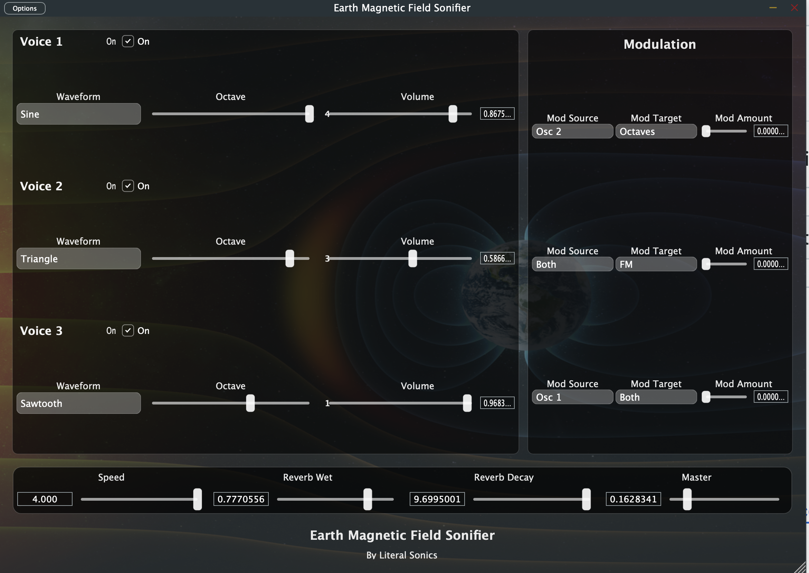
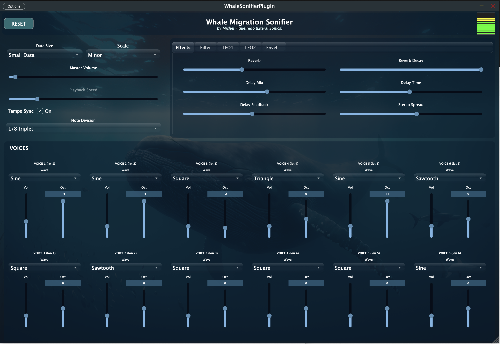

Tools designed to translate structured systems, natural phenomena, and data into sound.

Magnetic Field → Sound is a real-time sonification instrument that transforms geomagnetic activity into dynamic audio. Using live data from Earth's magnetosphere, the system converts fluctuations in magnetic intensity into continuously evolving sound structures.
Rather than simulating motion, the plugin listens directly to planetary-scale processes, translating invisible environmental changes into audible phenomena.
Magnetic field values are mapped to oscillator frequency, amplitude, and modulation depth. Sudden spikes in geomagnetic activity create bursts of harmonic tension, while stable periods produce slow, drifting textures.
Ambient composition, scientific sonification, installation work, and experimental performance.

Whale Migration Sonifier is an advanced audio plugin that converts real scientific whale migration data into dynamic, evolving soundscapes. By mapping latitude and longitude from tracked whales across the globe, the plugin transforms natural movement into expressive musical structures.
At its core, the system turns real-world data into modulation — allowing you to hear migration patterns as sound.
A root oscillator defines the tonal center. Additional oscillators map latitude and longitude into continuously shifting pitch, creating a living composition driven entirely by whale movement.
Switch between raw chromatic mapping or constrain output to musical scales. This allows a balance between scientific accuracy and harmonic control.
Choose between short datasets (detailed motion) or long datasets (macro migration patterns). Playback speed lets you compress or stretch time.
Multi-oscillator engine, filters, delay, reverb, ADSR envelopes, and LFO modulation targeting frequency, amplitude, and effects.
Ambient sound design, data-driven composition, scientific exploration.